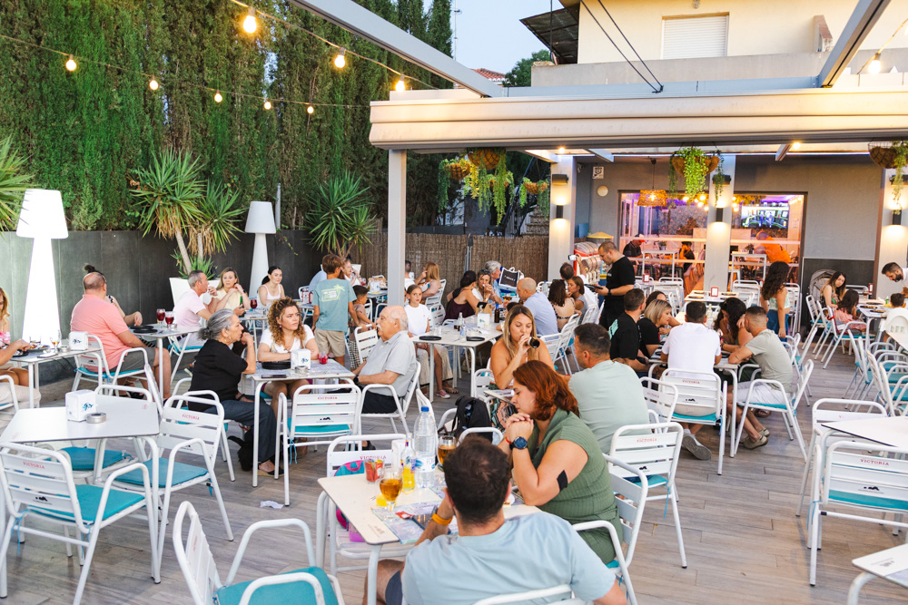

Interiores
Un comedor cálido
Mesas cómodas, luz agradable y un ambiente tranquilo para disfrutar de la carta en cualquier época del año.
Cocina mediterránea, ambiente cálido y una gran terraza pensada para disfrutar en familia. Café, meriendas, comidas, cenas y cócteles… de 12:30 a 24:00.


Sobre nosotros
En La Terraza encuentras varios ambientes para elegir: la terraza al aire libre, interiores acogedores, salones para grupos y un parque de bolas para los más pequeños. Todo junto a una cocina mediterránea de mercado y un horario amplio.
Espacio exterior amplio y agradable
Zona infantil y carta para peques
12:30 – 24:00 todos los días
Para alargar la sobremesa
La experiencia
Ven a merendar con los niños, a comer en familia, a cenar en pareja o a celebrar. El horario largo y la terraza lo hacen posible.
Café, comida, merienda y cena. Sin prisas. Hasta las 24:00.
Espacio pensado para que los niños se sientan a gusto.
Cumpleaños, comuniones y reuniones. Consulta menús especiales.
Nuestros espacios
Un restaurante familiar con interiores acogedores, salones para reunirse y un parque de bolas pensado para que los más pequeños también disfruten.
Interiores
Mesas cómodas, luz agradable y un ambiente tranquilo para disfrutar de la carta en cualquier época del año.

Salones
Salones amplios para comidas familiares, grupos, cumpleaños y celebraciones especiales.

Parque de bolas
Una zona infantil llena de color para que los niños jueguen mientras la familia comparte mesa.
Opiniones
“La terraza es perfecta para venir con niños. Comida casera, trato excelente y espacio para que los peques se muevan. Volveremos seguro.”
“Venimos casi todos los fines de semana a merendar. El ambiente es muy agradable y la carta infantil acierta.”
“Ideal para una comida de empresa o un cumpleaños. Nos adaptaron el menú y todo salió genial. Terraza muy cuidada.”
Llámanos, escríbenos por WhatsApp o rellena el formulario de contacto.